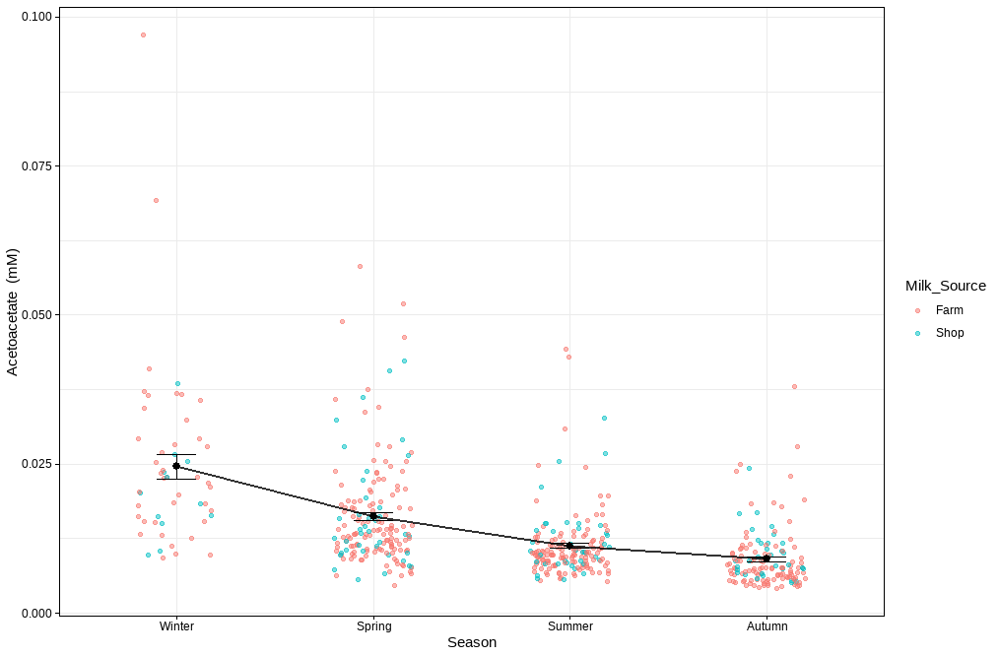
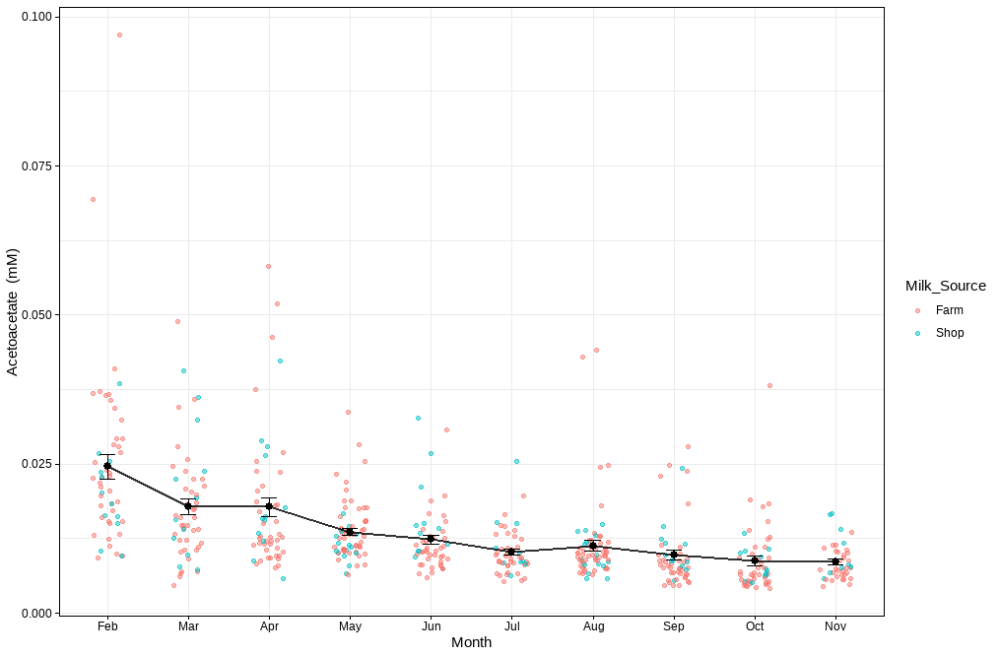
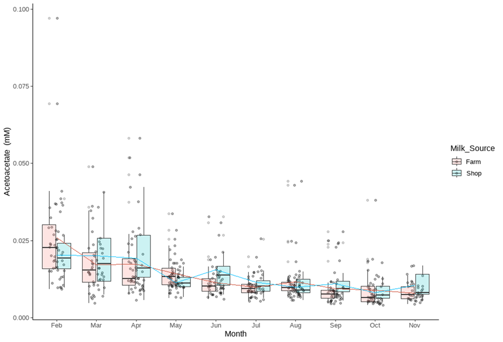
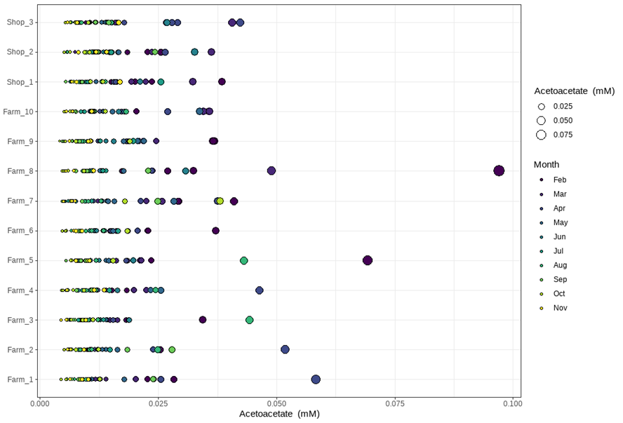

MetaBó-Cards / Acetoacetate
Acetoacetate
Ketone bodyMBB39Key seasonal marker (VIP > 1)Acetoacetate is produced from butyrate metabolism in the rumen epithelium and from hepatic ketogenesis during negative energy balance periods.
Look it up: HMDB ↗ · PubChem 6971017 ↗ · ChEBI ↗ · KEGG ↗
About Acetoacetate
- Chemical class
- Ketone body
- Biochemical description
- Acetoacetate is produced from butyrate metabolism in the rumen epithelium and from hepatic ketogenesis during negative energy balance periods.
- Seasonal trend · seasonality study
- Acetoacetate concentrations were significantly influenced by season (p < 0.001), with concentrations decreasing progressively from winter to autumn.
- MetaBó-Bainne ID
- MBB39
- Milk Composition Database
- BMDB0000060 ↗
- PubChem compound
- CID 6971017 ↗
Seasonality of the pasture-based milk metabolome
Peak monthFebruary
Lowest monthOctober
Low to peak2.8×
| Winter | Spring | Summer | Autumn | Mean lactation |
|---|---|---|---|---|
| 0.025 ± 0.015 | 0.016 ± 0.009 | 0.011 ± 0.006 | 0.009 ± 0.005 | 0.014 ± 0.009 |
Monthly means (mM)
| Feb | Mar | Apr | May | Jun | Jul | Aug | Sep | Oct | Nov |
|---|---|---|---|---|---|---|---|---|---|
| 0.025 | 0.018 | 0.018 | 0.014 | 0.012 | 0.01 | 0.011 | 0.01 | 0.009 | 0.009 |
Seasonality study · individual samples
Figures
Plots of every milk sample in the seasonality study. Click to enlarge.








Related metabolites
Other ketone body compounds in the database.